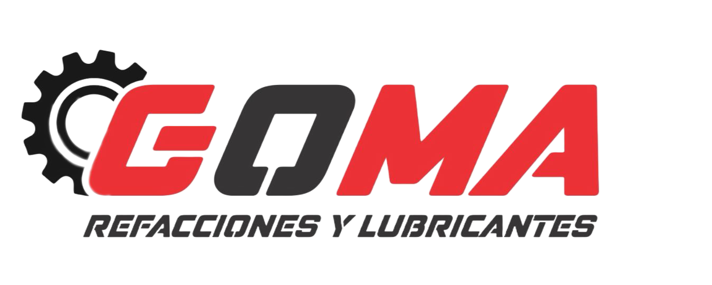

<!-- Esta es la página del blog aqui se agregaran novedades que haya como por ejemplo promociones, no modificar la 
    sintaxis de jinja ya establecida aqui, dentro de la carpeta templates iran los archivos HTML, los archivos CSS, JS
    e IMG irán en la carpeta static -->

<!-- Esto hace mención a que va a heredar el contenido de la página "base.html" -->
{% extends 'layouts/base.html' %}

{% block title %} Sobre Nosotros {% endblock %}

{% block content %}
        
    <div class="container__nosotros" style="margin-top: 170px; border-radius: 30px; margin-bottom: 120px">
        <div class="about-section">
            <h2 style="color: #a70c11;">Sobre Nosotros</h2>
            
            <p style="text-align: justify;">Somos una empresa dedicada a la comercializacion de refacciones de distintas compañias afiliadas oficiales.
                Fundada en el municipio de Juarez, en Nuevo León, contamos con locales en distintos puntos;
                reconocidos por nuestra integridad y valores, recalcando siempre la honestidad ante el cliente, siempre dejando un
                buen producto para el mismo. 
                Con años de experiencia en el mercado, nos hemos ganado la reputación de ofrecer a nuestros clientes una amplia gama de productos de las marcas más reconocidas y respetadas en la industria.
                Ya sea que estés buscando partes de motor, sistemas de transmisión, componentes eléctricos, diferenciales, suspensiones o cualquier otra pieza crucial para tu vehículo, estamos aquí para satisfacer tus necesidades con productos de alta calidad y a precios competitivos.
                Nuestra misión es superar las expectativas de nuestros clientes, ofreciendo un servicio de primera clase, productos de calidad y un compromiso inquebrantable con la satisfacción del cliente.
                Gracias por confiar en GOMA Refacciones y lubricantes como tu proveedor de refacciones automotrices. Esperamos poder servirte y ayudarte a mantener tu vehículo en perfecto estado durante muchos años más.
            </p>
            <center></center>
        </div>
    </div>

{% endblock %}